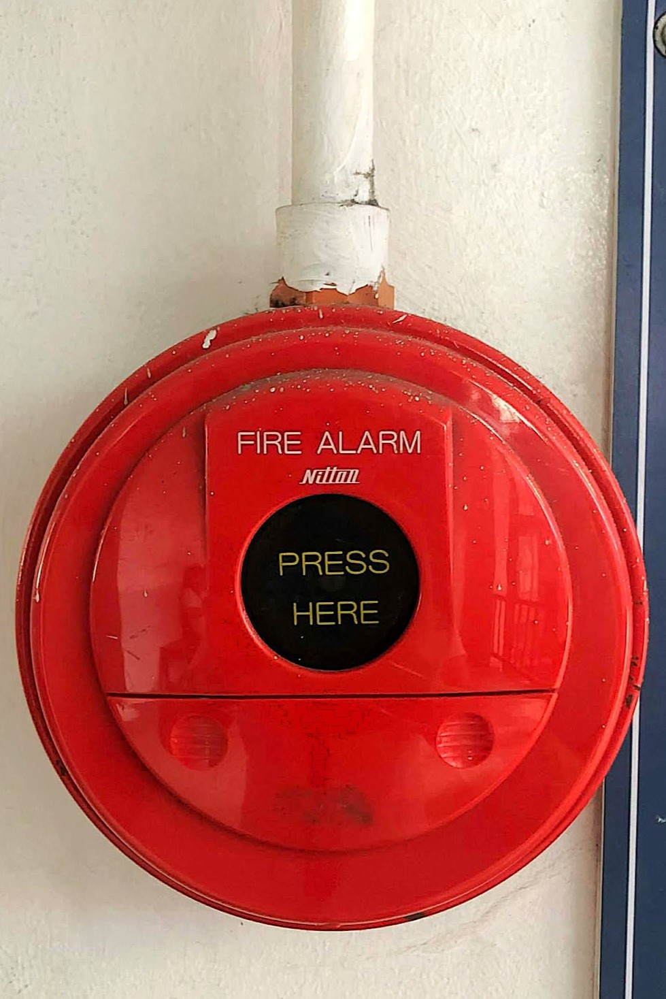

Photo taken at CIE TUP-Manila • November 2025
8S Management Poster
This poster reminds everyone to practice the 8S principles—from sorting and organizing to safety, saving, and studying. These simple habits help keep our workspaces clean, safe, and efficient. By following the 8S system, we create a healthier and more productive environment. Let’s make safety and discipline part of our everyday routine!

Photo taken at CIE TUP-Manila • November 2025
Student Readiness During Disaster Poster
This disaster readiness guide encourages students to stay alert and prepared while on campus. It provides clear steps to follow during earthquakes, fires, and volcanic eruptions, along with important emergency contact numbers. Staying informed and prepared helps protect not just ourselves—but everyone around us. Let’s work together to make TUP-Manila a safer place for all.

Photo taken at CIE TUP-Manila • November 2025
Evacuation Plan
This evacuation plan helps guide everyone to safety during emergencies. It shows the safest routes and assembly areas so students and staff can quickly find their way out of the building. Knowing this map—and taking a moment to check your nearest exit—can make a huge difference. Stay aware, stay ready, and help keep our CIE community safe.

Photo taken at CIE TUP-Manila • November 2025
Exit Signage
This illuminated exit sign reminds everyone where to go when every second counts. Clear and highly visible, it directs students and visitors toward the safest path during evacuations. Always take note of these signs as you move around the building—being familiar with them is one of the simplest ways to stay prepared and protect yourself and others.

Photo taken at CIE TUP-Manila • November 2025
Fire Alarm
This bright red fire alarm is a crucial safety tool in the CIE Building. In case of fire, pressing it immediately alerts everyone in the building to evacuate safely. Remember its location and use it responsibly—it could save lives and prevent injuries. Stay alert, stay safe!